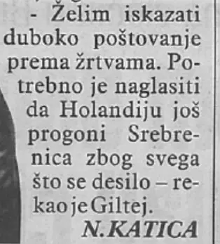

Beweisstück · Artikel
Interview mit Giltay in Dnevni Avaz, 11. Juli 2017
Die Passage
„Ich möchte meinen tiefen Respekt vor den Opfern bekunden. Es muss betont werden, dass Srebrenica die Niederlande wegen all dessen, was geschehen ist, noch immer verfolgt.“ Seite 1, die Schlusszeilen des Artikels, in der rechten Spalte neben dem Foto, über der Autorenzeile. Aus dem Bosnischen übersetzt; der Originaltext steht unten.
Originaltext
“Želim iskazati duboko poštovanje prema žrtvama. Potrebno je naglasiti da Holandiju još progoni Srebrenica zbog svega što se desilo.” Die Zeitung leitet Giltays Worte mit einem Gedankenstrich statt mit Anführungszeichen ein und schließt sie mit „rekao je Giltej“ (sagte Giltay) ab; beides ist hier nicht übernommen. Der Text folgt der gedruckten Seite; die am Zeilenende getrennten Wörter sind zusammengeschrieben. Der Artikel schreibt den Namen Edvin Giltej, mit der niederländischen Schreibweise Edwin Giltay in Klammern, und gibt den Buchtitel als Prikriveni general wieder.

Warum dieses Dokument wichtig ist
In Dnevni Avaz vom 11. Juli 2017, dem Tag des Gedenkens, zweiundzwanzig Jahre nach dem Völkermord, sagt Giltay, das Verteidigungsministerium seines Landes halte noch immer an der Darstellung fest, die Filmrollen seien versehentlich vernichtet worden, einer Darstellung, der kaum jemand glaube. Er fügt hinzu, er hoffe, dass das Parlament nach der Sommerpause beschließen werde, die Verteidigungsministerin vorzuladen, damit sie die Affäre endgültig abschließe. Zum Schluss bekundet er seinen Respekt vor den Opfern und sagt, Srebrenica verfolge die Niederlande noch immer. Diesen Worten ist die Überschrift entnommen. Der Essay zählt das Interview zur Berichterstattung über den parlamentarischen Druck von 2017.
Herkunft
- Dokument
- Zeitungsinterview, eine Seite, aus der gedruckten Ausgabe gescannt
- Veröffentlichung
- Dnevni Avaz, bosnische Tageszeitung, Seite pogledi (Ansichten)
- Rubrik
- RAZGOVOR · Autor zabranjivane knjige o genocidu, Interview · Der Autor eines verbotenen Buches über den Völkermord
- Überschrift
- „Edvin Giltej: Srebrenica još progoni Holandiju“, bosnisch für „Edwin Giltay: Srebrenica verfolgt die Niederlande noch immer“
- Unterzeile
- Vrijeme je da se moja zemlja suoči sa svojom prošlošću, rekao Giltej · Želi iskazati duboko poštovanje prema žrtvama
- Zwischenüberschriften
- Prikrivanje dokaza und Pozvati ministra, mit einem Kasten unter der Überschrift Važna priča koja je morala biti ispričana
- Autor
- Nihad Katica, in der Zeitung gezeichnet als N. Katica
- Datum
- 11. Juli 2017
- Interviewte Person
- Edwin Giltay, im Artikel Edvin Giltej, Autor von De doofpotgeneraal, auf Bosnisch wiedergegeben als Prikriveni general
- Thema
- Das niederländische Bataillon in Srebrenica, die Filmrollen, die in einem Labor in Den Haag verschwanden, und der Versuch, die Sache vom niederländischen Parlament aufgreifen zu lassen
- Bezüge
- Khadija Arib, Präsidentin der Zweiten Kammer (niederländisches Parlament); der parlamentarische Ausschuss für die Streitkräfte; die Verteidigungsministerin; und das damals jüngste Urteil in Den Haag, das die Niederlande für den Tod von 350 Menschen aus Srebrenica teilweise haftbar machte
- Abbildungen
- Ein Foto von Giltay mit dem Buch, Bildnachweis (Foto: R. Dresia), mit der Bildunterschrift „Giltej: Nadam se da će se nakon ljeta riješiti ova avantura“, und der Buchumschlag mit der Bildunterschrift „Zabranjivana knjiga ‚Prikriveni general‘“
- Sprache
- Bosnisch
- Quelle
- Scan, veröffentlicht auf dedoofpotgeneraal.nl als doc/dnevniavaz2017.pdf
Zitiert in: dem Essay „Das Verbot fiel, das Buch hielt stand“ im Kapitel (5) „Mehr als ein verbotenes Buch“.
Beweiskarte: https://
Dokument: https://
Zuletzt geändert am 13. September 2026, abgerufen am 3. Oktober 2026.

Diese Seite ist ein Beweisstück zum Buch Der Cover-up-General von Edwin Giltay und zur dazugehörigen Website.